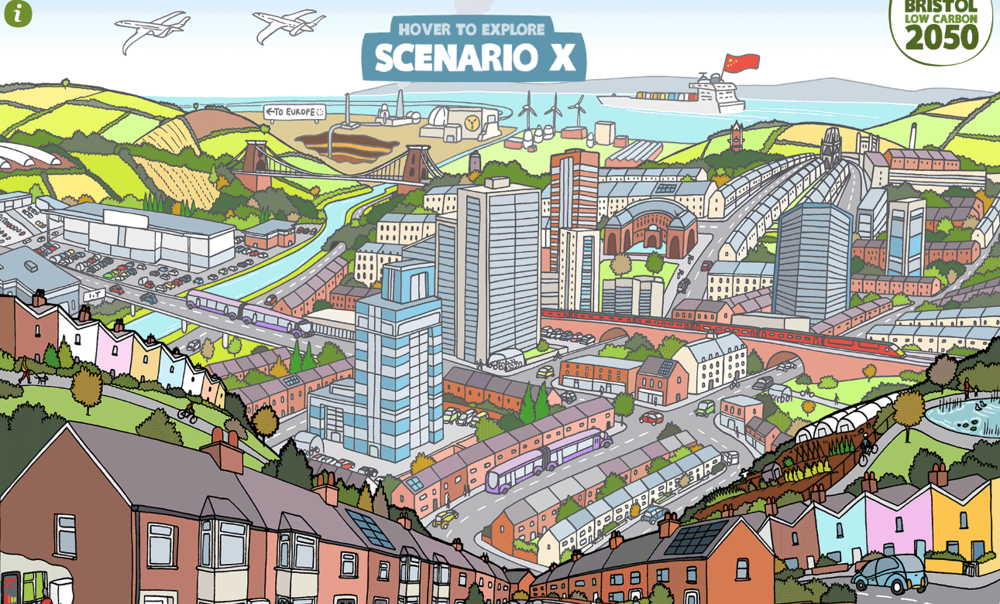

This website has unbelievable illustrations as well as a fun interactive page which makes this site both entertaining and unique. When you first enter the site the home page has a middle section which slides to the side when mouse hovers over the area. Depending on the way you move ur mouse you have different options to move around the site which is innovative and a good fit for the websites theme. The navigation seems rather simple and is entirely based on how you click the mouse and where you hover over.
The website its self provides facts based on statistics and depending on what senario and building you pick on you learn something new. I love there are a wide variety of colors and illustrations because it makes the page fun but at same side has a childish look. This website does a great job grasping the viewers attention and letting them surf the site which is why I choose it.
